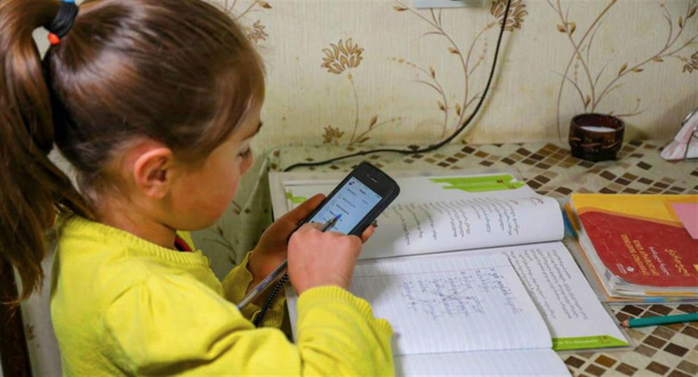
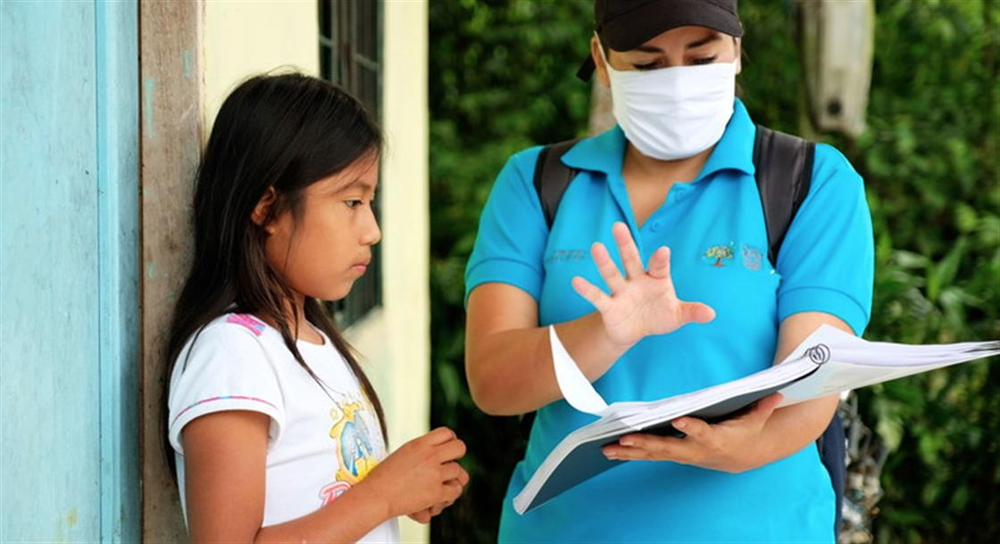
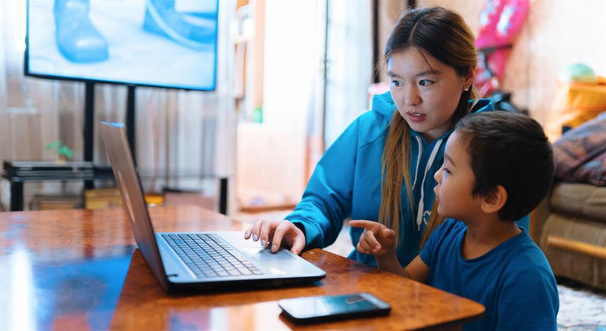
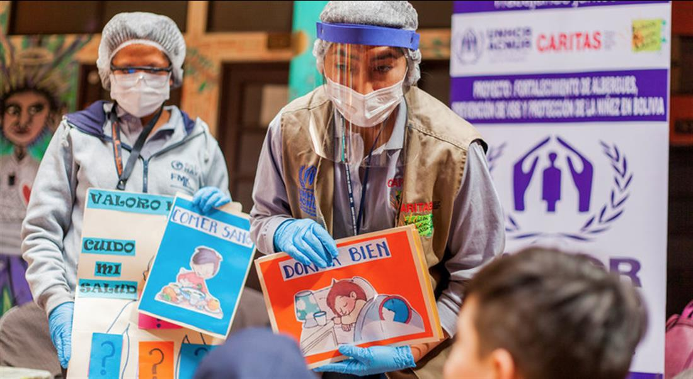
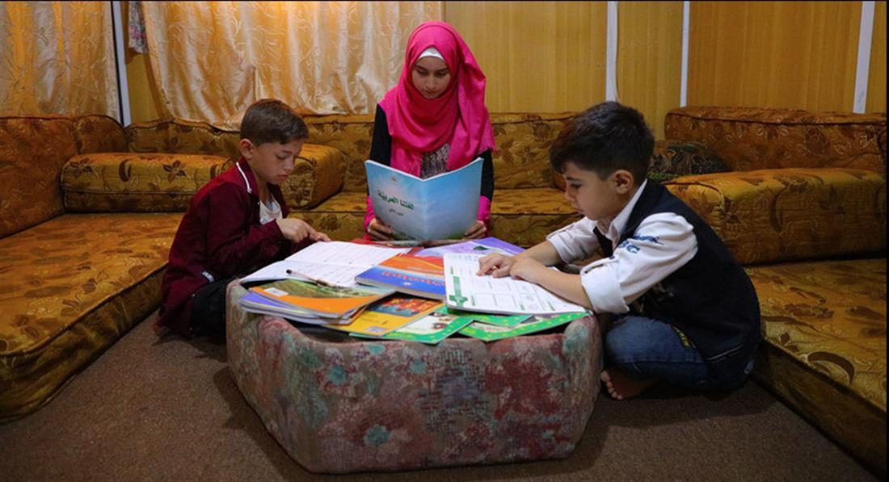
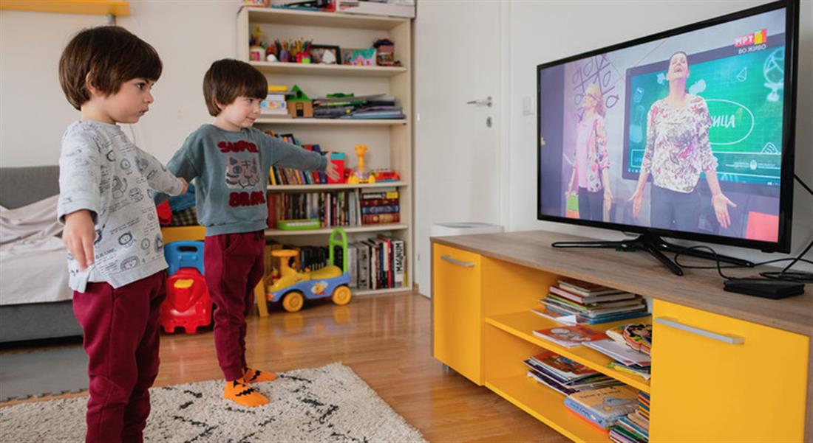
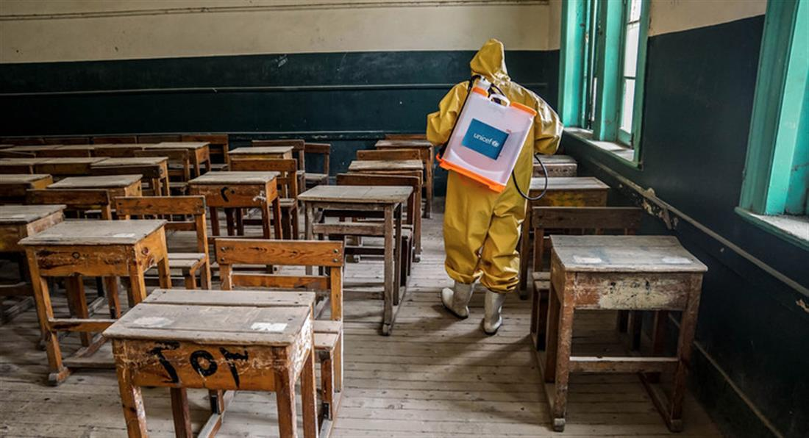
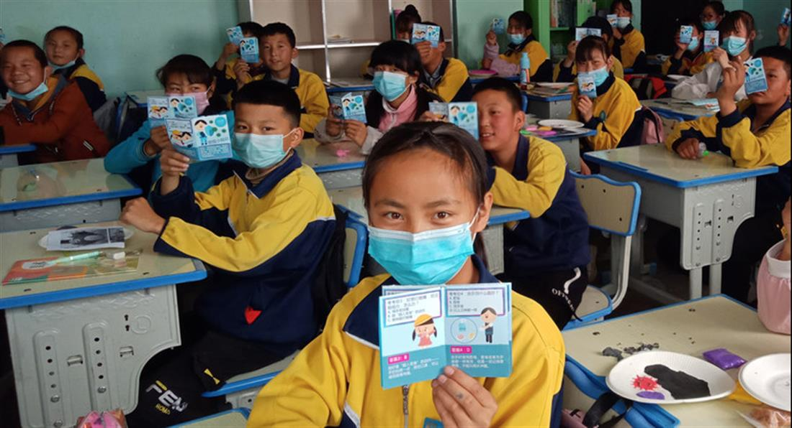
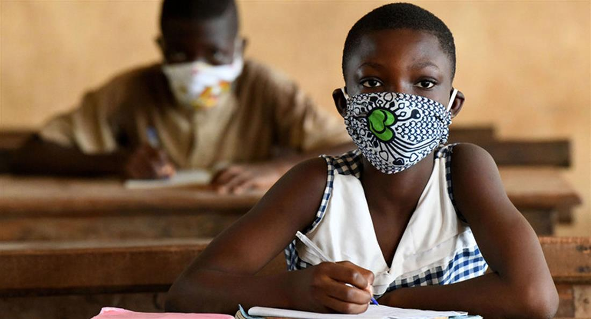

UNICEF/Nahom Tesfaye - A young boy in Ethiopia attends class at home, taking lessons via the radio, which are being broadcast across the country.
Learning from the pandemic

The COVID-19 pandemic has disrupted education for an estimated 1.2 billion children forcing schools across the world to learn new ways of educating children.
In Georgia, where children living in rural areas have limited internet and cell phone service, a young girl checks homework sent by her teacher in a group chat. She shares her mother’s cell phone with her three siblings.
© UNICEF Georgia

Meanwhile, in a remote area of the Ecuadorian Amazon, where there is no internet access, a teacher delivers a study guide to a young girl, so she can continue with her lessons.
© UNICEF/Martin Kingman

Disabled children in Kyrgyzstan benefit from the work of UNICEF volunteers. Here, a volunteer transcribes lessons at home with her nephew.
© UNICEF Kyrgyzstan

Mobile classrooms bring learning, games, and psychosocial support, to Venezuelan refugee children living in shelters in Bolivia.
© UNHCR/William Wroblewski

And in a refugee camp in Jordan, a Syrian teenage girl harnesses her passion for teaching, by helping other children with their studies.
© UNHCR/Shawkat Al-Harfoosh

Yoga for children is being broadcast on television in North Macedonia to help with the impact the lockdown is having on children’s mental health.
© UNICEF/Gjorgji Klincarov

In some countries, children are getting ready to return to school. Here, in Egypt classrooms are disinfected.
© UNICEF/Ahmed Mostafa

And in China’s Qinghai Province, students received leaflets produced by UNICEF providing instructions on how to protect themselves from COVID-19.
© UNICEF/Wang Jing

There’s still uncertainty in many parts of the world about when and how children will return to school.
In Côte d'Ivoire, classes restarted in May with strict measures in place including masks, social distancing, and the frequent washing of hands.
© UNICEF/Frank Dejongh
SOURCE: UN NEWS